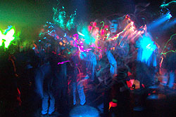
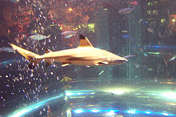

| 6
Janvier 2003. Partie 6. (les photos encadrées sont cliquables
pour mieux voir)
Encore
une fois je ne sais trop par ou commencer et j'ai l'impression que ma
mémoire fait défaut quand j'essaie de me rappeler ce que
j'ai fait chaque jour. Les derniers jours ont été plutôt
relax, et c'est bien comme cela car j'en avait de besoin. Des journées
à me faire bronzer sur la plage, et des fins d'après-midi
à me ballader en vélo dans Waikiki. Je peux prendre le vélo
d'Andy (le coloc qui est parti) quand je veux alors j'en profite. M'assoir
sur un banc et prendre les gens et les scènes en photo. Socialiser
avec les quelques personnes qui s'assoient près de moi. Manger
des ramen wonton dans les restos japonais et observer ces japonais et
leurs drôles de manières de siffoner leur bouffe et de renifler
librement. Comme d'habitude en profiter pour regarder les jolies filles
évidemment. J'ai utilisé le mot "mater" dans mes
derniers courriels, mais Marcelle et Huguette m'ont vite fait savoir que
ca voulait pas dire ce que je pense. Je pensait que "mater"
signifiait simplement regarder, mais semble-t-il que ca veut dire les
frapper ou je sais pas trop. Vous savez tous bien que je serait pas capable
de faire ca. J'ai de la misère à approcher des filles et
je m'excuse quasiment d'exister quand je me rends compte qu'elles sont
pas intéressées, alors je crois que je suis loin d'être
l'homme dominant qui bat les filles pour assouvir ses désirs. Enfin.
J'espère que ca rectifie les mots que j'ai peut-être mal
utilisés.
Bon, si je me fie
à mes photos, après le jour de l'an nous sommes allés
visiter le musée maritime. C'était très intéressant,
des premiers voyages à hawaii jusqu'aux premiers voyages en avion,
tout était pas mal documenté. Y'avait un petit film des
années 20 sur la chasse aux baleines, on y voyait les chasseurs
de l'époque à l'oeuvre... J'ai particulièrement apprécié
la partie quand une baleine harponnée tire un bateau de pêcheurs
vers les requins et un de ces derniers se faisait bouffer. Je me disait,
ben fait pour toé mon calisse. Je trouve tellement que ca l'air
innofensif une baleine, j'ai du mal à comprendre comment les hommes
pouvaient autrefois les chasser de cette facon. Les japonais sont encore
friands de viande de baleines... C'est triste. Enfin. Autre chose nouvelle
qu'on a fait, c'est d'aller au North shore observer les vagues de 30 pieds
et plus de haut. On
est chanceux de pouvoir assister à cela, c'est vraiment pas à
tous les jours que la nature nous donne droit à d'aussi immenses
vagues! Je pensait jamais avoir la chance d'assister à du surf
d'une telle qualité dans ma vie! J'étais vraiment époustouflé
et j'ai encore du mal à comprendre comment ces gars là peuvent
avoir le "guts" de s'élancer au large pour affronter
ces immenses vagues. J'ai tenté de prendre plusieurs photos mais
on voit pas grand chose vu qu'ils sont assez loin. J'ai ensuite tenté
de placer les jumelles au bout de ma caméra et finalement j'ai
réussi à en prendre au moins une qui a de l'allure!! Je
l'ai insérée dans ce texte à gauche. Les autres étaient
trop flous, malheureusement. Cette vague devait faire à peu près
25 pieds de haut, mais y'en a eu d'autres encore plus énormes par
après, dont une qui devait faire 40 pieds, d'ailleurs y'a juste
un gars qui a eu les couilles pour tenter sa chance, et il était
bon car il s'en est assez bien sorti! Mais faut vraiment le faire... Le
voir tomber de 10 pieds de haut pour ensuite descendre à une vitesse
folle les 30 pieds suivants, c'est quelque chose à voir. Même
dans les films de surf que j'ai vus j'avais jamais vu ca... Débile!!
Parlant de surf, ici c'est vraiment imprégné dans la culture
des gens. Presque tout le monde semble faire du surf. Quand on vas à
la plage on voit les papas montrer à leurs enfants de 5 ans comment
surfer... Ca fait penser un peu au patinage à québec, ou
bien l'apprentissage du vélo. Ici c'est normal, surfer fait partie
de la vie quotidienne. Ca me choque vraiment de ne pas être plus
à l'aise dans l'eau profonde, j'aimerais vraiment ca m'essayer
moi aussi. Dans le fond je serais sûrement capable de me débrouiller,
avec un surf attaché au pied y'a toujours moyen de s'accrocher
après et de flotter... Mais non moi j'ose pas car j'ai trop peur
de me noyer... C'est triste. Je sens que je passe à coté
de quelque chose, et je suis certain que j'adorerais ce sport. Ah! Tant
mieux que je pense comme ca, car cela me motive à apprendre à
mieux nager et aussi comment nager sur place, comme ca j'aurai toute l'assurance
nécessaire et qui sait, si je ne reviens pas ici bientôt
je pourrai toujours tenter ma chance avec les vagues du mexique dans un
avenir rapproché...
Départ
de Marcelle
Samedi
le 4 janvier Marcelle nous a quittés pour retourner dans le québec
frette. Nous avons passés cette dernière journée
à Hanauma Bay, cette endroit paradisiaque dont je vous parlais
ou j'ai nagé avec les poissons... J'étais ravi de renouveller
l'expérience et cette fois j'ai passé carrément l'après-midi
sous l'eau. Je ne suis sorti brièvement qu'à quelques reprises
afin de m'assurer que je n'étais pas devenu un poisson et ensuite
j'y retournais. C'est vraiment extraordinaire de pouvoir vivre une telle
expérience pour seulement 3$, frais requis pour accéder
à la baie. J'ai encore une fois nagé avec une multitude
de poissons et j'ai eu la chance de voir plusieurs espèces que
je n'avais pas vu avant. Par exemple d'énormes poissons perroquets.
Une chance qu'ils sont pas dangereux car étant donné leur
grosseur on fait un peu le saut quand on les voit s'approcher de nous.
J'étais tellement absorbé dans mes observations que je me
suis soudainement retrouvé dans des eaux plus profondes, mais comme
j'étais plutôt à l'aise et je commençais à
pogner la twist pour ce qui est de nager, j'ai donc simplement nagé
vers les eaux moins profondes, sans paniquer. Je
suis assez fier de moi d'ailleurs, je vais peut-être finir par être
capable de surfer plus vite que je ne le pense. ;) C'est vraiment génial
de plonger avec un masque et tuba, on peut respirer librement tout en
étant sous l'eau alors on oublie vite le temps et l'on devient
petit à petit un des leurs, c'est-à-dire ces chères
créatures sous-marines. Je comprends mieux maintenant comment les
mammifères marins ont pu passer de créatures terrestres
à des créatures sous-marines. Il y a tout un autre monde
à découvrir là-dessous. Évidemment tout le
long de mes observations je n'ai cessé de penser à toutes
les merveilleuses photos que j'aurais pu prendre si j'avais un appareil
sous-marin, alors comme j'ai croisé un aquarium l'autre jour qui
contenait toutes des espèces de poissons et coraux que j'avais
déjà observé, j'en ai profité pour en prendre
quelques photos. Ca vous donne une petite idée de ce à quoi
ca ressemble sous l'eau à Hanauma Bay! Après ces heures
de joyeuse plongée nous sommes retournés chez Steph et Marcelle
a préparé ces bagages et puis Huguette et Stéphanie
sont allées la reconduire vers l'aéroport. J'ai vraiment
eu un petit blues et j'étais triste de voir partir Marcelle. Je
ne la connaissait pas mais j'ai vraiment eu du plaisir à voyager
avec elle. Mon petit blues était aussi beaucoup dû au fait
que je sentais que ca allait bientôt être mon tour de quitter
ce petit paradis et vraiment, ca ne me plaît pas du tout d'y penser.
D'ailleurs j'ai reçu un courriel de Marcelle ce soir et nous avertis
bien moi et Huguette de profiter des jours qui nous reste. Voici d'ailleurs
un extrait de son courriel: "si vous voulez mon avis Huguette
et David, profitez au maximum de votre séjour parce que la grisaille
de l'hiver prend rapidement le desssus." Rien de réjouissant
à l'idée de partir d'ici, si vous voulez mon avis.

Ce
soir là j'ai senti un immense besoin de sortir et de me défouler
alors j'ai regardé dans le journal et j'ai vu qu'il y avait DJ
Storm et the Warp Brothers, d'allemagne, au "Maze Nightclub".
Parfait. Une petite soirée rave à danser toute son énergie,
rien de tel pour éliminer les toxines et la dépression du
retour qui commencait à s'emparer de moi. J'avais visé juste,
car malgré le fait que j'en suis ressorti toujours seul, j'ai quand
même eu beaucoup de plaisir durant cette soirée et le fait
de danser comme ca toute la nuit m'as libéré d'une ribambelle
de petits cossins qui me pesaient sur la conscience. J'ai tout de même
dansé et socialisé avec quelques filles qui m'ont fait retrouver
ma bonne humeur, et la musique m'as fait frissonner d'extase. Quand la
musique est si bonne, pas besoin d'ecstasy ou autres drogues pour tripper...
En tout cas pas dans mon cas! L'endroit était assez bien, trois
salles avec styles différents question de satisfaire tout le monde.
La frénésie était à son comble dans la salle
"trance", qui était souvent parsemée de drum'n
bass ultra-rapide. Du beat comme je l'aime! =) J'ai souvent visité
aussi l'autre salle plus "ambiante" qui elle aussi m'as drôlement
satisfaite avec la musique d'aphex twin, squarepusher et compagnie. J'ai
profité de l'occasion aussi pour exploiter les capacités
de ma caméra en matière de photos à exposition prolongée.
Les résultats sont au-delà de mes espérances, particulièrement
celle de gauche. J'ai tourné ma caméra à 90 degrées
pendant que je prenait la photo, alors vous pouvez voir si vous tournez
votre tête à 90 degrées un autre visage caché
dans la photo. Cliquez
sur la photo pour la voir mieux! Évidemment, comme vous me connaissez,
je ne pouvais pas passer à côté de l'occasion de me
faire photographier avec la serveuse, qui était drôlement
mignonne. Quand je voit d'aussi jolies filles c'est plus fort que moi,
je ne peux m'empêcher de les prendre en photo. :PQuestion
de garder un souvenir de ce joli visage.=) L'autre serveuse qui a pris
la photo était quelque peu offusquée que je ne veuille pas
l'avoir en photo elle aussi alors elle m'a fait une mini-crise pour que
je la prenne aussi. Voici donc la photo des deux ensembles. J'ai aussi
dansé avec ces deux japonaises, que j'ai trouvées pas mal
plus amusantes et sociables que la plupart des autres japonaises dans
la place, ces dernières étant plutôt snobes et arrogantes,
avec leurs talons haut et leurs sacoches gucci à 600$. À
4h00 am la musique a arrêté et les lumières se sont
allumées, je ne comprenais pas pourquoi, je ne pensait pas qu'il
était si déjà si tard! Enfin
bref, ce fut une agréable soirée, je n'ai vraiment pas vu
le temps passer.
Le lendemain j'ai
dormi jusqu'à midi et j'ai ensuite rejoint Huguette à la
plage "sans-souci" avec Steph en vélo. Elles sont parties
plus tôt que moi de la plage car Steph avait affaire au pet-shop
pour s'acheter de nouveaux poissons. Moi je me suis fait bronzer plus
longtemps et j'ai passé le reste de la soirée à Waikiki
à prendre des photos et à regarder le monde passer. Aujourd'hui,
j'ai eu une bonne nuit de sommeil et je me suis levé plus tôt
afin de passer la journée sur la plage, encore une fois. Sauf que
cette fois je suis allé essayer la plage de waikiki, juste derrière
la statue du Duke, là ou il y a le plus de gens. Ce fut dépaysant,
j'étais entouré de japonais et j'ai pas entendu grand monde
parler anglais de la journée. J'ai
pris plusieurs nouvelles photos panoramiques mais je suis trop paresseux
pour les assembler maintenant. Je me suis ensuite promené en vélo
à Waikiki et je suis allé manger au petit resto qui est
sur la photo en haut de la page. C'était encore une fois assez
typique du japon, et j'ai vraiment eu l'impression d'être dans un
petit resto japonais. C'était très bon et pas très
cher encore une fois. Ce soir nous sommes allés voir le film danois
"Le festin de Babette" dans un micro-cinéma/club vidéo
nommé "The Movie Museum". C'est vraiment un petit endroit
chouette, c'est deux cinéphiles qui ont partis ca, y'ont pleins
de films de répertoire et même plusieurs films québecois!
Y'ont arrangés une petite salle à l'arrière avec
des divans, et on peut amener notre bière, chips, etc. Y'a un grand
écran et on peut y voir des films pour 4$. Le film était
excellent, c'est un vieux film mais c'était intéressant
car y'avait des francais dans le film alors on avait souvent nullement
le besoin de lire les sous-titres.
Maintenant il nous
reste à voir si nous allons aller sur la Big Island, tout cela
dépend de plusieurs facteurs, disponibilité des places et
de Stéphanie, le prix que ca va coûter, etc. Moi je préfèrerais
qu'on y aille mercredi et jeudi si possible, sinon jeudi et vendredi car
comme c'est ma dernière fin de semaine ici, j'aimerais avoir au
moins une soirée pour sortir une dernière fois dans Waikiki
ou Honolulu! J'insère ci-bas d'autres photos!

À suivre...
Aloha!
partie
7>>
|
{kind=link}
{kind=link}
{kind=link}
{kind=link}